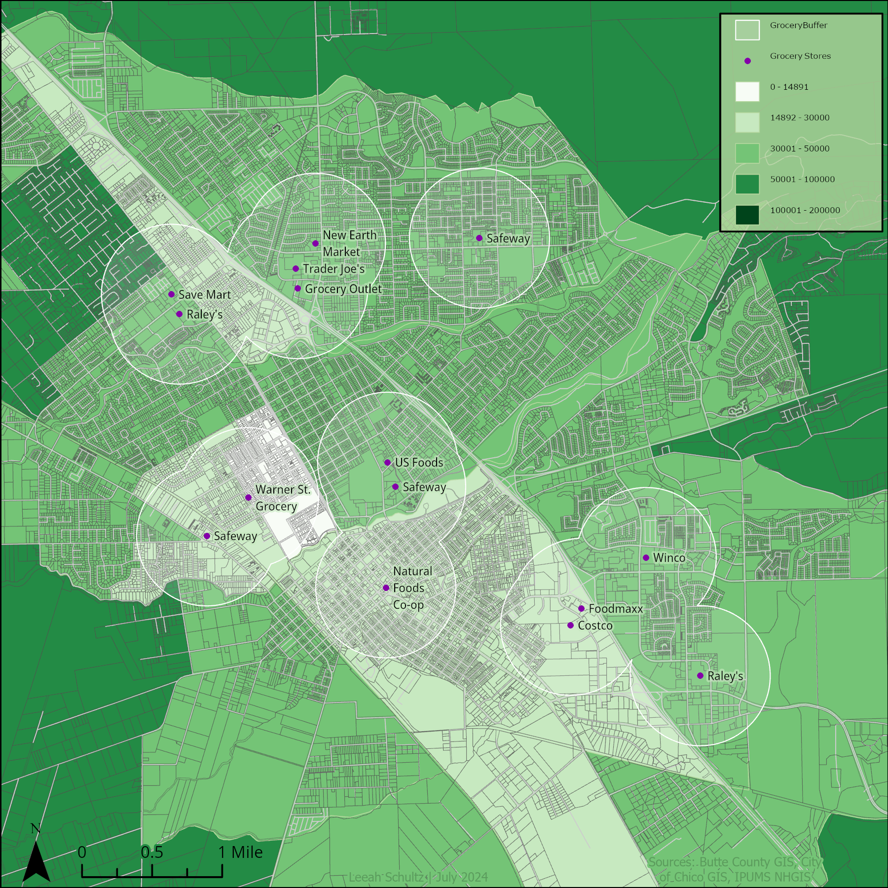

Recent Work:
View from the Eye

This map was an exploration of raster and DEM data whose purpose was to visualize the view from a high vantage point, using the Eye of Sauron at the top of the tower of Barad-dûr from the Lord of the Rings trilogy as an example.
Flood Risk in Humboldt County

This project involved creating a flood risk map for Humboldt County using GIS tools, highlighting vulnerable areas as sea levels rise.
Environmental Justice Map

This map visualizes income levels and their correlation with toxic waste dumping sites, helping identify areas of environmental inequity.
Low Income and Grocery Store Access
This map analyzes access to grocery stores for low-income communities in Chico, California, identifying potential food deserts in the area. Each point on the map represents a grocery store with a 1-mile radius of walkable access.